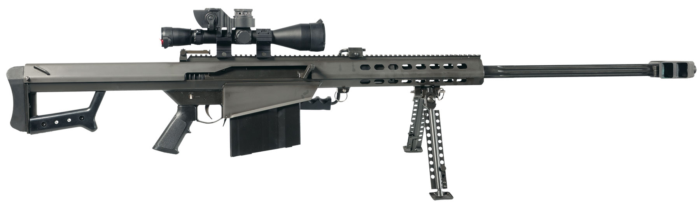

M82狙擊步槍

巴雷特M82（英語：Barrett M82）是由美國巴雷特槍械公司（Barrett Firearms Company）研發生產的「特殊用途狙擊步槍」（Special Application Scoped Rifle，簡稱：SASR），該槍及其衍生型裝備了大部份西方國家的軍隊，包括美軍。美軍給它的暱稱為「輕50」（Light Fifty），因為其使用與白朗寧M2重機槍相同的12.7×99公釐NATO（.50 BMG，12.7公釐）大口徑彈藥。該槍有多種衍生型，包括原本的M82、M82A1、M82A3和採用犢牛式設計以便於攜帶的M82A2，隨後的XM500也繼承它的設計精神，使用了犢牛式設計。美軍採用的改良版本則命名為「M107」（上機匣頂部設有全尺寸皮卡汀尼導軌），而巴雷特公司目前推出的最新型號為M107的進一步改進版，M107A1。
- M82是一種槍管後座式半自動槍械，當擊發時槍管將會短距縮回（約1英吋25公釐）後再由旋轉式槍機安全鎖住。短暫後退後，槍機被推入彎曲軌再扭轉把槍管解鎖。當槍機解鎖後，槍機拉臂瞬間退回，槍管轉移後座力的動作完成循環。之後槍管固定且槍機彈回，彈出彈殼。當擊針歸位，槍機從彈匣引出一發子彈並送進膛室對準槍管。同時扳機彈回擊針後方位置。此槍的彈匣一次可裝10發子彈，雖然也曾生產過12發彈匣，可是在第一次波灣戰爭後就已停產。
膛室分兩部份（上部和下部），薄鋼板衝壓而成再用十字栓固定。槍管有凹孔增加散熱和減重，還裝有大而有效的槍口制動器。早期的槍口制動器是圓柱箭頭，新的M82裝有雙膛直角箭頭形（V形）制動器。這制動器減少了接近70%的後坐力。其缺陷是每發射一發槍彈時從制退器噴出的火藥氣體都會在射手附近捲起大量塵土和鬆散顆粒。
除瞄準鏡外，M82A1還配備了摺疊式準星，以備槍械在瞄準鏡損壞時還能使用。美軍使用的M82通常會裝上Leupold Mark 4望遠瞄準鏡，而M82A1M（海軍陸戰隊M82A3）則配有長型皮卡汀尼導軌和美軍的光學瞄準鏡，使用者可透過皮卡汀尼導軌安裝更多的瞄準配件。所有的M82都配備可摺疊式提把和兩腳架（其中M82A3的為可拆式設計）。M82A3設有分離式槍托，槍托內藏有柔軟填充物和特製橡膠後座墊用於抵銷射擊後座力，據說其後座力比12鉛徑散彈和7.62公釐口徑的步槍更小。M82A1和M82A3能安裝於M3或M122三腳架（機槍用），以至是一些載具車輛上的「巴雷特軟拖架」上使用。雖然M82A1設有摺疊式準星，然而在實戰中射手很難用傳統準星瞄準，因為M82的重量和長度都超出一般步兵槍械的水平。
M82A2不同於M82A1的地方大多數在於前者採用犢牛式佈局，握把和扳機都設置在彈匣前面，而槍托則提前到膛室後面一點處，幾乎靠近彈匣。外加的前握把在靠近槍管的下方，瞄準鏡也往前移了一段距離。